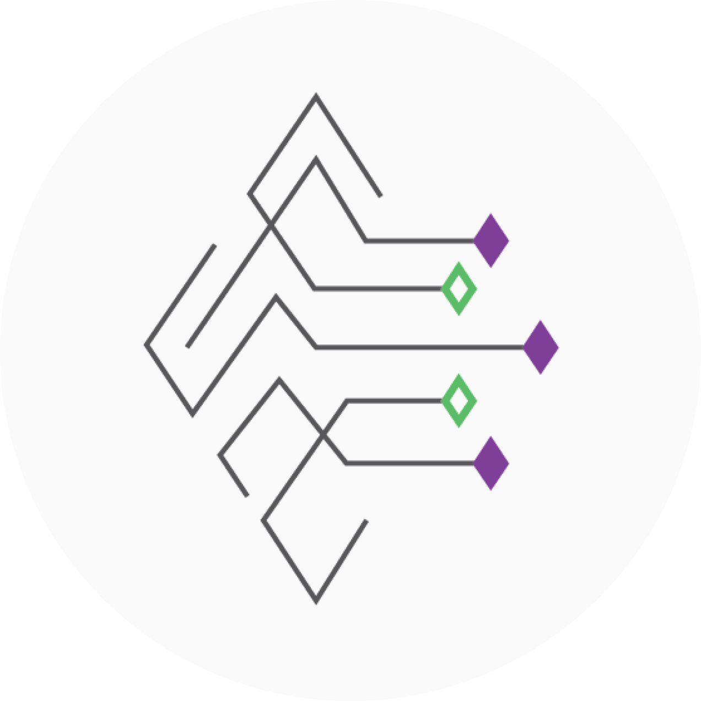

My Journey Through Code and Creativity
As a passionate and driven IT student, I have had the privilege of working on several impactful projects that showcase my skills in web development, UI/UX design, and problem-solving. Through my experiences, including developing productivity tools and contributing to web development projects during my internship, I continue to grow as a tech professional. These opportunities allow me to combine creativity with technical expertise, and further my commitment to innovation in the tech industry.


QuizLite
Offline Productivity Tool for Students
QuizLite is an innovative productivity tool I developed to help students effectively manage their academic tasks while enhancing their study habits. In this project, I took on the roles of backend, frontend, and UI/UX designer. I created a fully responsive platform where users can organize their schedules, create personalized flashcards, and test their knowledge through quizzes.
I implemented features such as task management, progress tracking, and interactive quiz creation, all designed to optimize the student learning experience. Through this project, I sharpened my skills in full-stack web development, database management, and user experience design, learning the importance of building intuitive interfaces and robust backend systems that cater to the needs of users.
CreateSpace
Comprehensive Social Media Platform
CreateSpace is a collaborative digital platform I worked on as the UI/UX designer, aimed at empowering users to manage creative projects while maintaining productivity. My primary focus was to design an intuitive and visually appealing interface that would streamline the user experience. I carefully crafted layouts and interactions to ensure ease of use and accessibility.
The project emphasized collaborative tools, task management, and content sharing, making it ideal for users looking to balance creativity with productivity. This project allowed me to dive deep into user-centered design principles, making sure that the final product aligned with both the needs of the users and the aesthetic values of the platform. Through CreateSpace, I gained a better understanding of how to design systems that cater to both individual and group workflows in a seamless manner.
Chimes Consulting
IT Intern, UI/UX Designer, and Website Tester
As an IT intern at Chimes Consulting, I had the invaluable opportunity to contribute to two significant projects: the Chimes Consulting Website ReVamped and the Marcburg Website. My role as both a web frontend and backend tester, as well as a UI/UX designer, involved collaborating closely with developers and designers to ensure the functionality, performance, and user experience of both websites met the highest standards. I conducted thorough testing on the frontend elements, identifying and troubleshooting usability issues while providing valuable feedback to enhance the user interface.
Additionally, I was involved in backend testing, ensuring that the integration between the website's design and its technical infrastructure was seamless. This internship allowed me to apply my academic knowledge to real-world challenges, further developing my skills in web development, user interface design, and testing. It also gave me a deeper understanding of the web consulting process, from client needs to product delivery, reinforcing my passion for problem-solving and innovative design.
